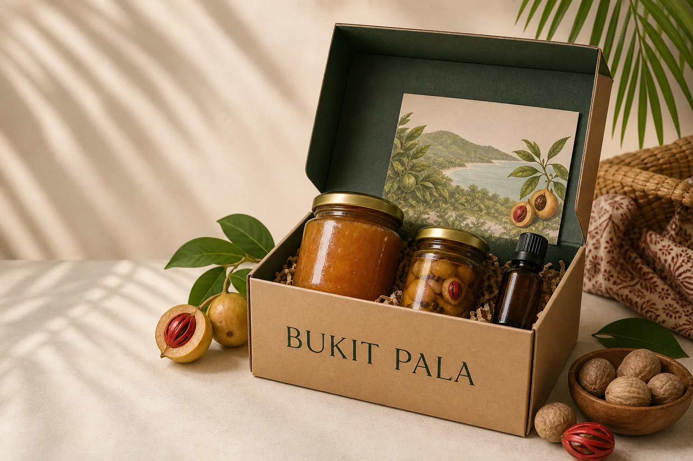

Students
A present from Penang that is easy to carry home after a semester or visit.
A small-batch gift-set concept bringing together local nutmeg flavours, useful products and the story of place — designed for students, travellers and thoughtful gift buyers.

Balik Pulau is closely associated with nutmeg, yet the products are often discovered separately. The opportunity is to make them easier to understand, easier to gift, and more connected to the place they come from.
Bukit Pala packages that opportunity as one clear purchase: a useful Penang gift with a story, not a box of anonymous items.
A present from Penang that is easy to carry home after a semester or visit.
A compact local gift that explains what makes Balik Pulau's nutmeg distinctive.
A considered alternative for hosts, teams, clients and family occasions.
Bukit Pala is framed as concept validation, not a profitable shop. The first job is to test whether a place-based gift set has enough demand, supply feasibility and operating simplicity to justify a small batch.
People who need a compact Penang gift that is easy to carry and easy to explain.
The set must fit real moments where a local story makes the gift feel more intentional.
This needs to be tested against cheaper generic souvenirs and buying items separately.
These risks must be answered before stock is purchased or payment is accepted.
The first pilot keeps the range intentionally small so supplier quality, packaging time and buyer interest can be tested before adding more products.
A familiar, giftable entry point with a bright tropical flavour and everyday use.
A more distinctive Balik Pulau taste that makes the set feel genuinely local.
A compact non-food product that broadens the set beyond the pantry.
A short guide to the products, makers and nutmeg's connection to Balik Pulau.
The concept uses a small pre-order window to learn what people want, consolidate demand and avoid holding unnecessary inventory.
A landing page and short order form capture preferred set, quantity, pickup area and occasion.
Combine orders, confirm current supplier quotes and publish the final contents and price before taking payment.
Quality-check each item, assemble the box and add the place-story card.
Offer one USM/Penang pickup point, collect feedback and decide whether the next batch is justified.
The pilot should move from conversations to supplier confirmation, then to no-payment interest, and only then to a controlled fulfilment test.
Interview 8–12 potential buyers across students, tourists, gift buyers and local company gift buyers.
Confirm 1–2 suppliers, product options, MOQ, shelf life, wholesale price and small-batch reliability.
Use a no-payment form to test enquiry volume, preferred contents, occasion and acceptable price range.
Run a tiny batch and record packing time, damage, spoilage, pickup issues and post-purchase feedback.
The concept should not claim a final selling price until supplier, packaging and fulfilment costs are confirmed.
Jam, pickles, oil or other confirmed products.
Box, labels, inserts and the place-story card.
Quality checking, packing, handover and transport.
Replacement, broken packaging, expired stock and failed handovers.
Food-related gifting has practical constraints. The pilot should define these before taking payment.
This is a portfolio concept and proposed pilot, not a live shop. Feedback from students, local makers and gift buyers would shape the first real test.
Share feedback ↗